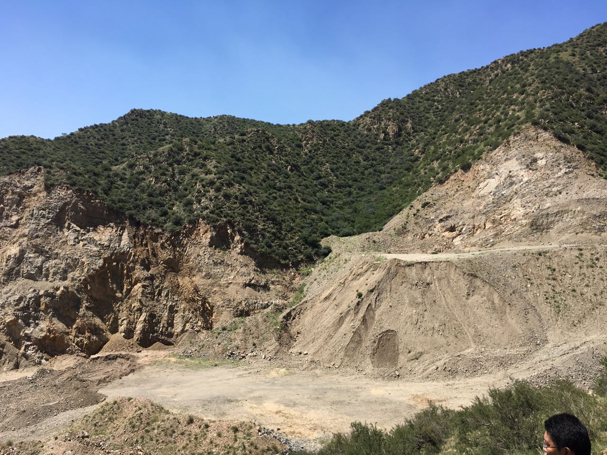

The Cost After the Numbers
Inner Mongolia · November 2017

I thought I was calculating ecological damage. I didn’t realize I was also calculating the weight of scientific responsibility.
Seven and a half hours.
Twenty-six kilometers.
Across mountains scarred by illegal mining.
When I returned from the field, I thought the most difficult part of the investigation was behind me.
I was wrong.
The hardest part began after I submitted the report.
The landscape itself carried the memory of a development philosophy once proudly summarized by a local saying:
“Better to choke than to starve.”
Economic growth at any cost.
Factories before forests.
Production before consequences.
Walking those mountains, I wasn’t simply measuring ecological damage.
I was walking through the physical remains of an idea.
Every abandoned road.
Every excavated hillside.
Every dry stream.
Asked the same question.

What happens when today’s survival becomes tomorrow’s debt?
Weeks later, after the field survey, calculations, and endless revisions, I finally submitted the ecological damage assessment report.
Only then did I fully understand what I had actually written.
It was no longer just a scientific report.
It was evidence.
The number I calculated—the monetary value of ecological damage—would become part of a courtroom decision.
It might determine another person’s sentence.
At that moment, I felt a responsibility I had never encountered during six years of scientific training.
I had learned how to design research.
How to collect data.
How to quantify uncertainty.
No one had taught me what it meant when science entered the courtroom.
The burden was not only legal.
It was scientific.
Ecological damage assessment was still a young discipline.
The methods were evolving.
Many assumptions remained uncertain.
Yet the legal system required something science rarely promises:
A precise number.
A final answer.
As if uncertainty itself could be reduced to a single figure.
For the first time in my career, I wondered whether my report deserved the authority it had been given.

Not long afterward, I received notice that I might be asked to testify in court.
I refused.
Not because I doubted my work.
But because I realized the report no longer belonged entirely to science.
It had entered another world.
A world where evidence, law, politics, and power intersected in ways I could neither control nor fully understand.
I also began to worry that the report could become something I had never intended it to be.
A weapon.
Not only against environmental destruction.
But perhaps within political struggles hidden far beyond my field investigation.
Whether that fear was justified almost became secondary.
The realization itself changed me.
That investigation marked the first time I understood that scientific neutrality is not something a scientist simply possesses.
It is something we struggle to protect.
Sometimes successfully.
Sometimes not.
Science may begin with curiosity.
But once it leaves our hands, it acquires consequences that no statistical model can predict.
I still believe natural resources damage should be investigated.
I still believe science belongs in public decision-making.
But since that investigation, I have carried a different question into every project.
It is no longer simply:
“Is my analysis scientifically rigorous?”
It is also:
“Am I prepared for what happens after the science leaves my hands?”
Perhaps the hardest part of becoming a scientist is not learning how to calculate uncertainty.
It is learning how to live with responsibility.